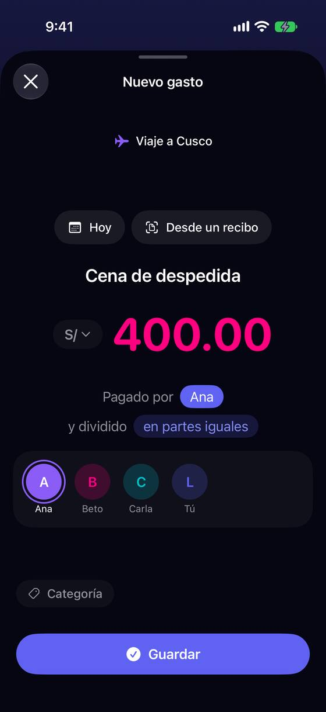
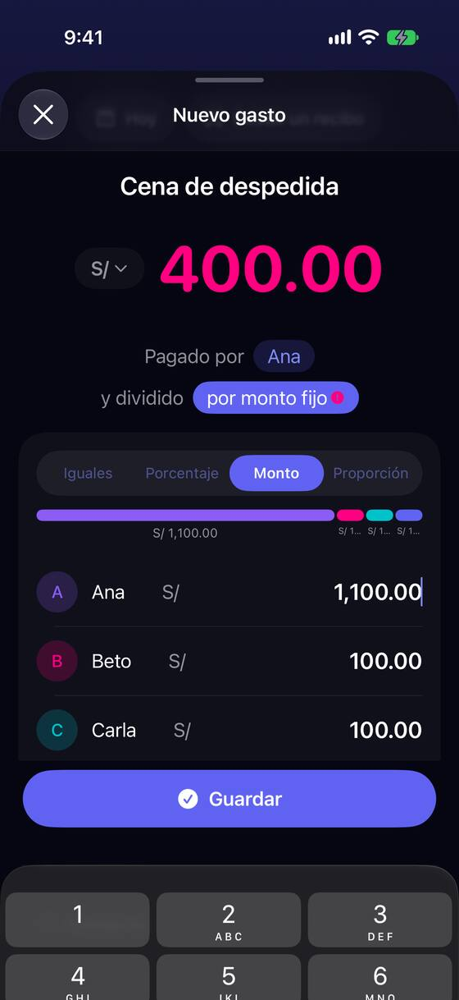
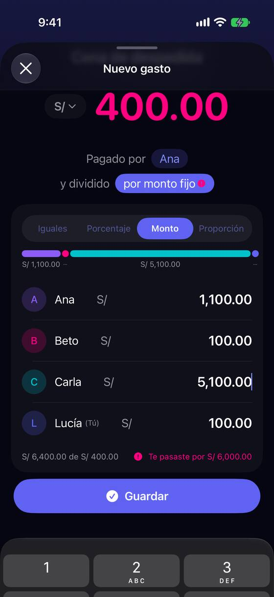

Partir desigual cuesta 11 toques y obliga a borrar «100.00» en cada fila
Hoy
Capturas del simulador (app de origin/2.3, semillas de prueba). Pasos hoy: 11 toques + 4 textos + ~12 borrados (leído en el código); medido en el simulador, el resultado no cuadra.







De dónde sale
- Medido Conductor XCUITest: tras elegir «Monto», los cuatro campos valen «100.00» (traza del test).
- Captura Capturas 65 y 66: tras tocar el campo, 6 borrados y «150», queda «1,100.00»; Carla, «5,100.00». El toque sintético dejó el cursor delante del número; con el dedo depende de dónde caiga. A confirmar en el iPhone.
- Código
AmountInputHelper.swift:22-27: tras dos decimales, los dígitos se tiran sin aviso.GroupSplitEditorCard.swift:340-352: el campo no se selecciona al tocarlo; vaciarlo saca a la persona del reparto. - Código
GroupSplitCalculator.swift:80: «Monto» acepta hasta 0,02 de diferencia: se puede guardar un gasto de S/ 400 cuyas partes suman 399,99. - Código Pastillas de la frase de ~30 pt (
GroupExpenseFormView.swift:760) y segmentos de ~34 pt (SplitTypeSegmentedSelector.swift:58-63), por debajo de 44 pt. - Captura Captura iPad 65: la hoja de «Nuevo gasto» con el teclado deja ver una sola fila.
Las opciones
De 3 a 5 alternativas con el mismo caso. Desliza cada recorrido; el anillo cian marca dónde toca Lucía.
Tocar un importe lo selecciona entero
El reparto sigue igual, pero al tocar el «100.00» de Ana el número queda seleccionado: lo que se escribe lo reemplaza. Debajo de la lista, lo que falta o sobra se actualiza en cada tecla.
A favor
- Quita el error medido (el «1,100.00») sin cambiar la pantalla.
- Sirve en todos los campos de importe de la app, no solo aquí.
En contra
- Sigue escondido tras «en partes iguales» → «Monto»: los mismos 7 toques hasta los campos.
- Sigue habiendo que escribir 2 importes y comprobar a mano que cuadra.
Escribe solo lo distinto: el resto se reparte solo
Al abrir «Cómo se divide», cada persona muestra en gris su parte igual (100.00). Escribes solo a quien cambia: Ana 150 y Carla 50. Los que no tocas se reparten lo que falta y llevan la marca «el resto». Ya no hay que elegir entre «Iguales» y «Monto»: escribir un importe es salir de «iguales».
A favor
- Dos importes escritos para el caso, y nunca un reparto que no cuadre mientras quede alguien «el resto».
- Desaparecen «Monto», «Porcentaje» y «Proporción» del camino corto (pueden quedar en «Más formas»).
- Es como lo cuenta la gente en la mesa: «Ana pidió más, Carla menos, el resto igual».
En contra
- Hay que decidir adónde va el céntimo cuando el resto no divide exacto (250 / 3 = 83.33…).
- Si alguien no participa, hay que poder quitarlo (marcar 0) sin que cuente como «el resto».
- Cambia el modelo del reparto en el formulario: más trabajo y tests.
«Igual, con ajustes»: más y menos por persona
Se parte igual y se ajusta: «Ana +50», «Carla −50». Cada fila tiene un pequeño ajuste; la parte igual se recalcula para que la suma no cambie. Es el «por ajuste» de Splitwise.
A favor
- Explica bien el caso típico (alguien pidió más, otro menos).
- La suma siempre se conserva.
En contra
- Un concepto nuevo («ajuste») para quien no viene de Splitwise.
- Si los ajustes no suman cero, la parte igual cambia y hay que explicarlo.
Un teclado del reparto, persona por persona
Tocar «por monto» abre un teclado propio arriba del cual se ve a quién le toca y cuánto falta: «Ana · S/ 150», «Siguiente: Beto», «Faltan S/ 250». Con el último, Yala propone lo que queda.
A favor
- Ideal con texto grande: un número grande a la vez.
- Nunca se pierde de vista cuánto falta.
En contra
- Pantalla nueva y teclado propio: lo más caro.
- Lento si solo cambia una persona de cuatro.
Lado a lado
La última pantalla de cada recorrido, frente a hoy.
Comparación
| Opción | Pasos para el caso (maqueta) | Esfuerzo | Riesgo | Reabre |
|---|---|---|---|---|
| Hoy | 11 toques + 4 textos + ~12 borrados (leído en el código); medido en el simulador, el resultado no cuadra. | — | — | — |
| B1 · Tocar un importe lo selecciona entero | 9 toques + 4 textos, sin borrar | bajo | bajo | — |
| B2 · Escribe solo lo distinto: el resto se reparte solo | 6 toques + 4 textos (2 del reparto) | medio | medio | — |
| B3 · «Igual, con ajustes»: más y menos por persona | 6 toques + 4 textos | medio | medio | — |
| B4 · Un teclado del reparto, persona por persona | 4 toques + 4 textos | alto | medio | — |
Lente de perfiles
Perfiles simulados, no entrevistas Los siete perfiles de la revisión del usuario nuevo, usados como lentes. riesgo alto de trabarse · medio · bajo.
| Perfil | Hoy | B1 | B2 | B3 | B4 |
|---|---|---|---|---|---|
| P1 · Migrante de Excel | quiere escribir 4 números y ya | — | escribe sus 2 números | prefiere el número final | — |
| P2 · Principiante abrumado | «por monto fijo», «Proporción» | «por monto» le cuesta | no elige tipo | «ajuste» nuevo | guiado |
| P3 · Anotador rápido que no lee | 11 toques en la mesa | sigue largo | rápido | — | 4 números siempre |
| P4 · Experto de otra app (Splitwise, Tricount) | lo encuentra, lento | — | como Tricount | conocido | distinto a lo que conoce |
| P5 · Llega por una invitación de grupo | — | — | — | — | — |
| P6 · Varias monedas y tarjeta | — | — | — | — | — |
| P7 · Texto grande, a veces en iPad | pastillas de 30 pt, cortadas con texto grande | pastillas pequeñas | menos controles | más cifras por fila | un número grande a la vez |
Recomendación: B2
Es la que mejor cuenta el caso («Ana más, Carla menos, el resto igual»): dos importes escritos y el reparto siempre cuadra. B1 va debajo de cualquier opción (seleccionar al tocar es lo que arregla el error medido), así que la propuesta es B1 ya y B2 como cambio del formulario. B4 es la mejor con texto grande, pero la más cara.
Qué decide Jürgen
- ¿El reparto pasa a «escribe solo lo distinto» (B2), con «Monto», «Porcentaje» y «Proporción» en «Más formas»?
- ¿Se corrige ya que tocar un importe lo seleccione entero (B1), en todos los campos de importe de la app?
- ¿Se confirma en el iPhone, con el dedo, el «1,100.00» medido con toques sintéticos?
Revisión por vistas 2.3 · Grupos. Maquetas en HTML con datos ficticios: no son la app. Pasos contados sobre las maquetas; los de «Hoy», en el simulador o en el código citado.